Ya sea por la riqueza histórica, por la grandilocuencia de la naturaleza o por la capacidad de relajación, existen diversos puntos en el planeta que atraen a una enorme cantidad de visitantes.
Playa del Carmen, México
Se considera que la Polinesia francesa es uno de los destinos más exclusivos del mundo, uno de esos lugares que todos desean conocer pero que su lejanía implica una inversión enorme en el traslado y el hospedaje.

Belice
Emplazado en la Centroamérica continental resalta este mágico país de Belice, pegado a México, pero con muchas beldades que lo transforman en un destino espectacular. Una de sus islas, conocida como Cayo Ambergris presenta una maravilla, el hoyo azul.
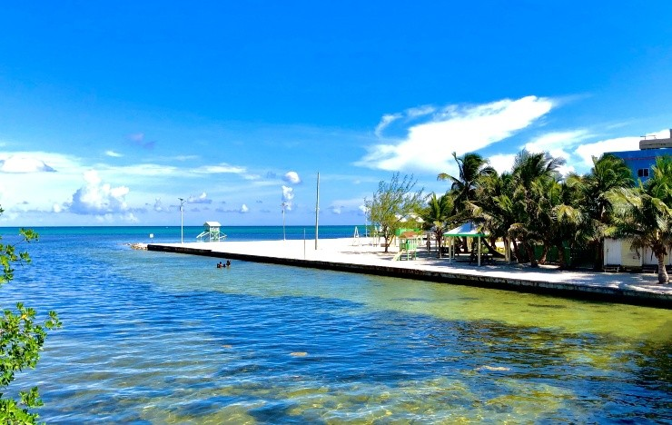Gran Caimán, Islas Caimán
Las Islas Caimán disponen de cientos de atractivos para los viajeros, en primera instancia por la preciosidad del mar Caribe. Este país que está compuesto por tres islas, hay una que sobresale la Gran Caimán, la de mayor extensión y muy cercana a Cuba y Jamaica.

Marrakech, Marruecos
Inmersa en el centro de Marruecos asoma con fuerza la ciudad de Marrakech, que ha logrado superar en interés y movimiento a la capital del país, Rabat. El incesante trajinar por sus calles y la desembocadura en la inmensa plaza de Yamma el Fna son estímulos suficientes para zambullirse en esta urbe.
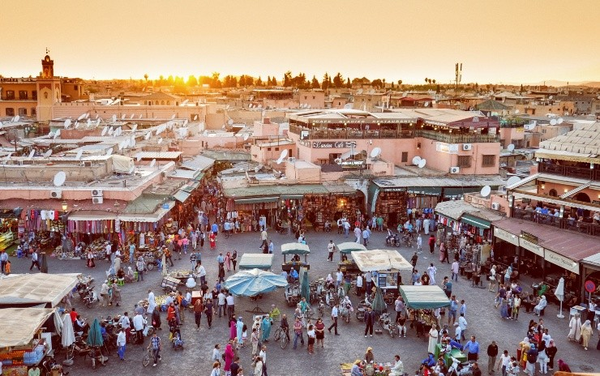Río de Janeiro, Brasil
Probablemente la ciudad más famosa de todo Sudamérica, ha adquirido una relevancia descomunal por sus características y prácticamente los europeos, asiáticos y norteamericanos desean pasar alguna vez por esas playas y sobre todo vivir en primera persona los magnánimos carnavales. La mentada alegría brasilera se percibe a cada paso y aporta una atmósfera perfecta.

Roatán, Honduras
Las playas se erigen en uno de los principales estímulos de los turistas, una gigantesca mayoría anhela un periodo vacacional en ese entorno natural, donde el mar y la arena generan un contexto perfecto para el descanso. En ese aspecto, todos los países con acceso al mar Caribe toman la delantera y ahí se destaca la isla de Roatán, que forma parte de un archipiélago de cayos de Honduras.

Jamaica
El Caribe, siempre el Caribe. Esta región de Centroamérica atrapa perse, por su identidad, por el poder abrumador del mar más cristalino y cálido, por las arenas blancas, por las palmeras en las playas.
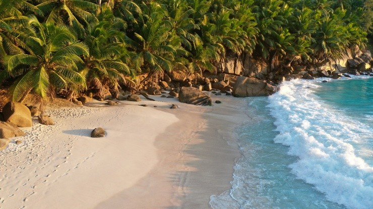Dubai, Emiratos Unidos
Increíble por donde se la mire, esta ciudad es literalmente una creación íntegra del hombre, de una planificación consensuada, de una proyección arquitectónica y tecnológica. Esta urbe se creó sobre un desierto, así como suena, donde existía una kilométrica cantidad de arena y desolación se elevó una metrópoli, pero no una cualquiera, sino la más moderna y excéntrica del mundo.
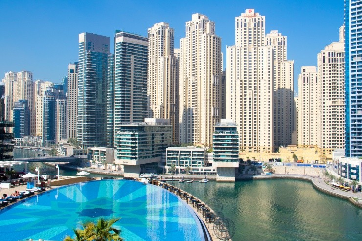Estambul, Turquía
Estambul es un crisol de culturas y como si fuese poco es la única ciudad del mundo que está ubicada tanto en Europa como en Asia, sí, así como suena. La urbe más famosa de Turquía tiene su territorio dividido por el estrecho de Bósforo, que es el recurso natural que se determinó para dividir los dos continentes.
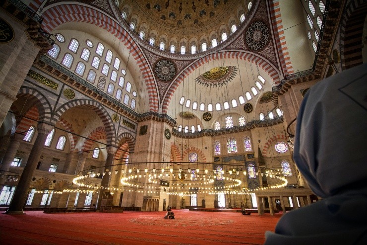Cuzco, Perú
En las altísimas cumbres de la Cordillera de los Andes aparece colgando de las montañas la misteriosa Machu Picchu, el epicentro de la civilización Inca. Un recóndito destino, que encierra un halo de enigma y sobre todo una energía poderosa. Claro que acceder a esas ruinas implica un esfuerzo, por las inclemencias de la altitud y el camino sinuoso y complejo. Cuzco es el portal para acercarse a toda esta majestuosa cultura incaica y es la ciudad para hospedarse y desde ahí emprender excursiones para adentrarse en el Valle Sagrado, entre otros atractivos. Por otro lado, en el centro de la urbe también abundan estímulos como los mercados locales y la gastronomía tan típica de esos lares.
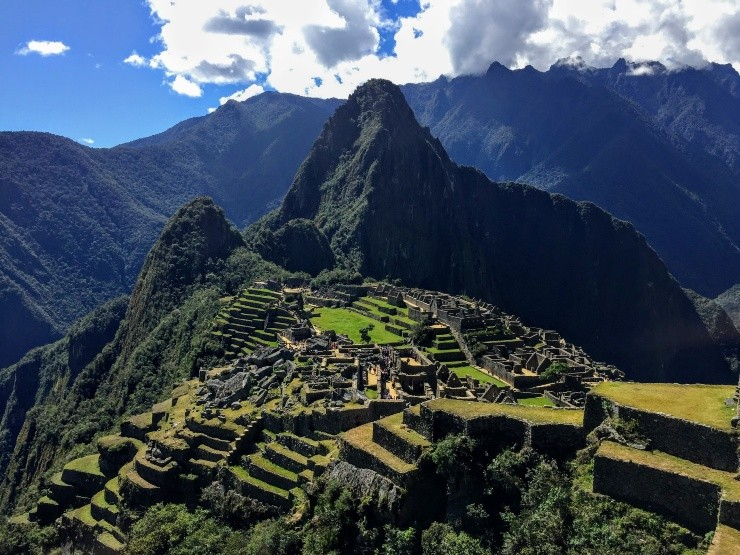Venezia, Italia
Cientos de miles de imágenes retrataron a Venecia, con sus particularidades, con esos canales infinitos y esa esencia única de ser una ciudad montada, literalmente, sobre el agua. Así lucen cientos de puentes que interconectan todo, lo que se constituye en un paseo obligado para caminar todas esas callecitas. Ni hablar de subirse a una góndola, empujada por los brazos de los lugareños, para embeberse en ese aire romántico. Como si fuese poco, la historia está presente a cada paso, con muchísimos sitios que se remontan a épocas antiquísimas, con incluso vestigios del paso de Napoleón Bonaparte.
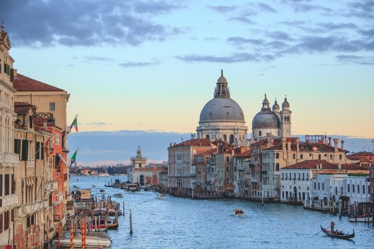Creta, Grecia
Inmersa en el fascinante mar Mediterráneo esta ciudad presenta diversos atractivos, como esas construcciones que se agarran del terreno irregular, con esas casas tan similares con una fachada uniforme, pero preciosa. En los antiquísimos albores de la civilización se la popularizó como la isla de los olivos, que todavía continúan vigentes en cada rincón.
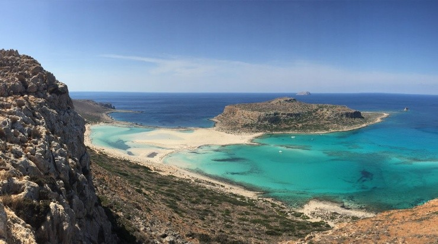San Petersburgo, Rusia
San Petersburgo posee algunas cualidades que la transforman en una ciudad mucho más amigable, a diferencia de Moscú que todavía se presenta más cerrada, con mayor dificultad para los visitantes. La arquitectura provoca admiración, con esos templos coloridos y de una majestuosidad admirable. Además, que el lazo con las épocas de los zares genera anhelos de vivir esa experiencia.

Bali, Indonesia
La isla de Bali se destaca como uno de los destinos más elegidos en todo el planeta. Esas playas de arenas tan blancas que su brillo encandila son uno de los principales atributos. Pero también provoca deseos sus selvas tupidas, con templos tan antiguos como preciosos. Además, en esa porción de tierra también se encuentran volcanes y arrozales y hasta lagos.
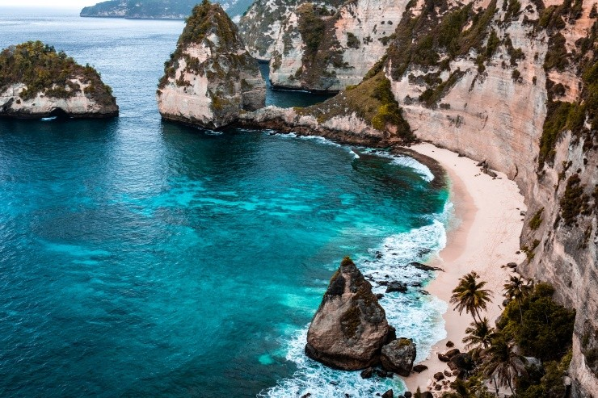Roma, Italia
Roma posee todos los atributos para generar un aluvión de viajeros, que se zambullen en sus recovecos ávidos de percibir la gloria del Imperio Romano. El Coliseo indudablemente se erige en un monumento que merece ser recorrido y sentir por un rato que el tiempo retrocedió cientos de años. Y ni hablar de la basílica de San Pedro del Vaticano, nada más y nada menos, otro recinto de cientos de hitos de la humanidad.
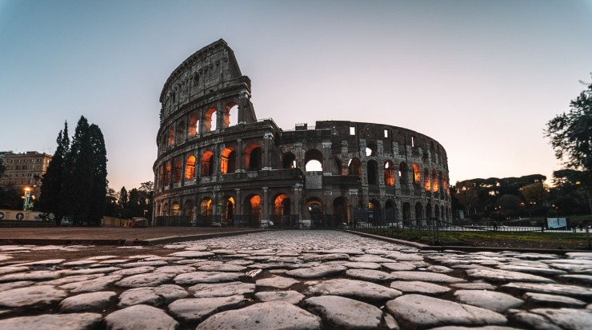Giza, Egipto
La Gran Pirámide de Giza nunca perderá su encanto, esa condición tan especial para que los habitantes del mundo transiten miles de kilómetros para vivir la experiencia de vivirla en primera mano. La construcción de pura roca con casi 150 metros de altura imanta, ya sea por su belleza a simple vista, pero sobre todo por los secretos que guarda en sus entrañas.
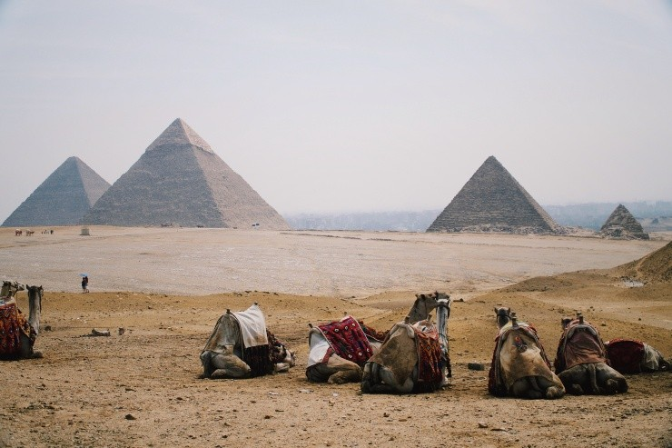París, Francia
Sinónimo de amor, de romance, de una atmósfera de sentimiento puro que estimula a las parejas a entrelazar sus almas. París se erige en un ícono del planeta, en cualquier rincón del mundo se conoce esa emblemática capital europea. Cualquier ser humano que junta sus ahorros anota esta urbe como un lugar ineludible, un destino al que visitar.
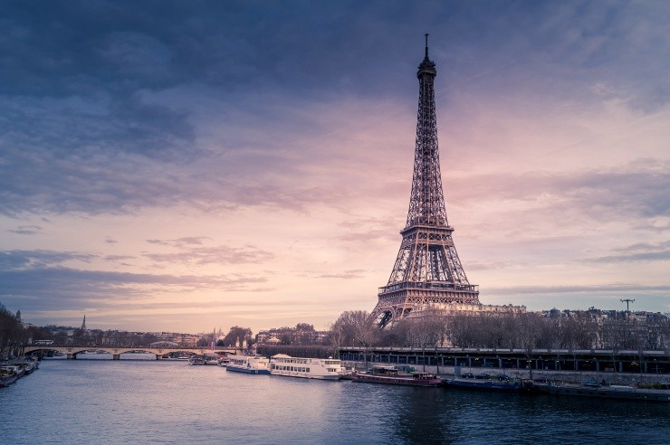Londres, Inglaterra
Una de las capitales más trascendentes del mundo, ya sea por su gravitación en las grandes decisiones, como por su belleza extrema. Las calles londinenses enamoran con esa variopinta gama de estímulos que abarcan desde edificios antiguos a rascacielos híper modernos.
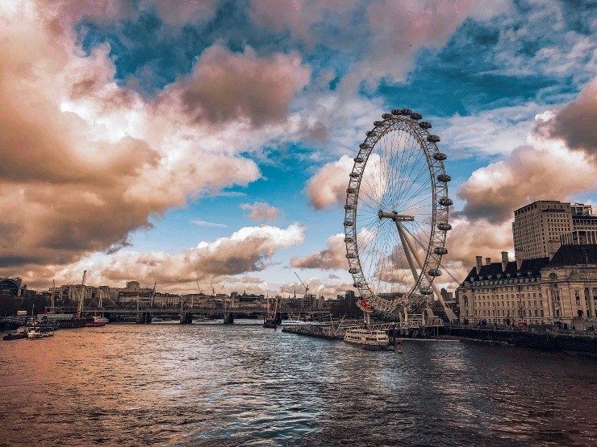